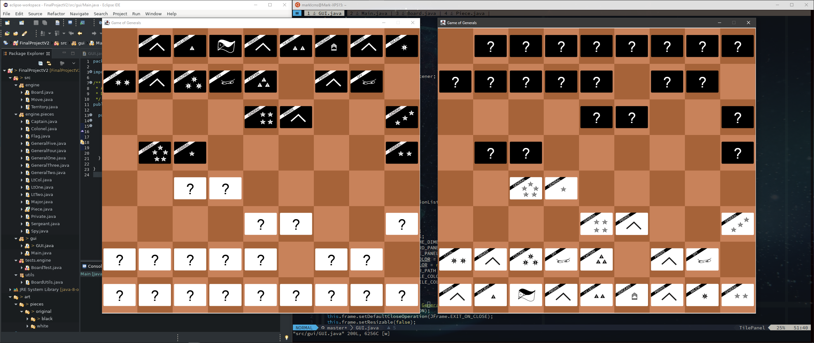
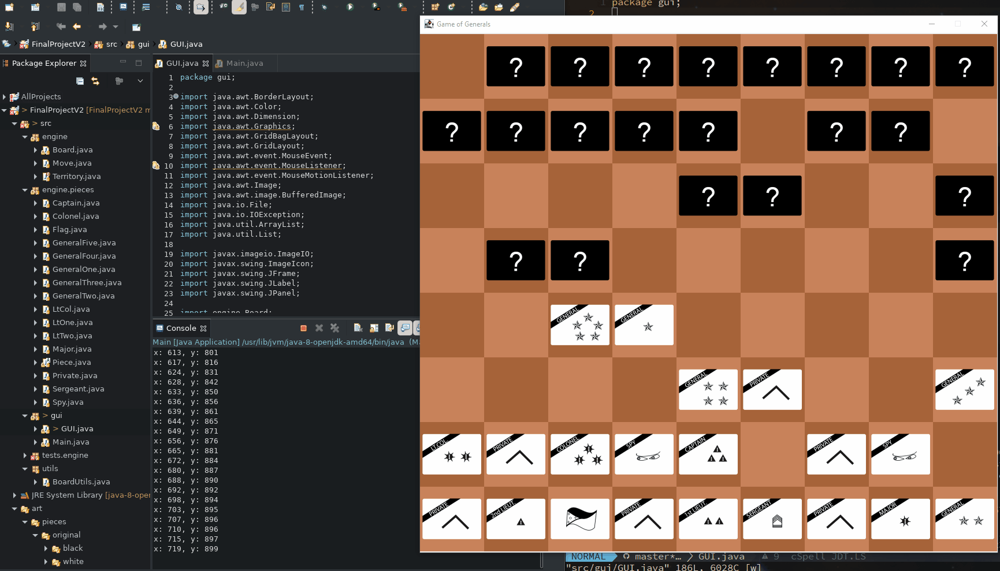
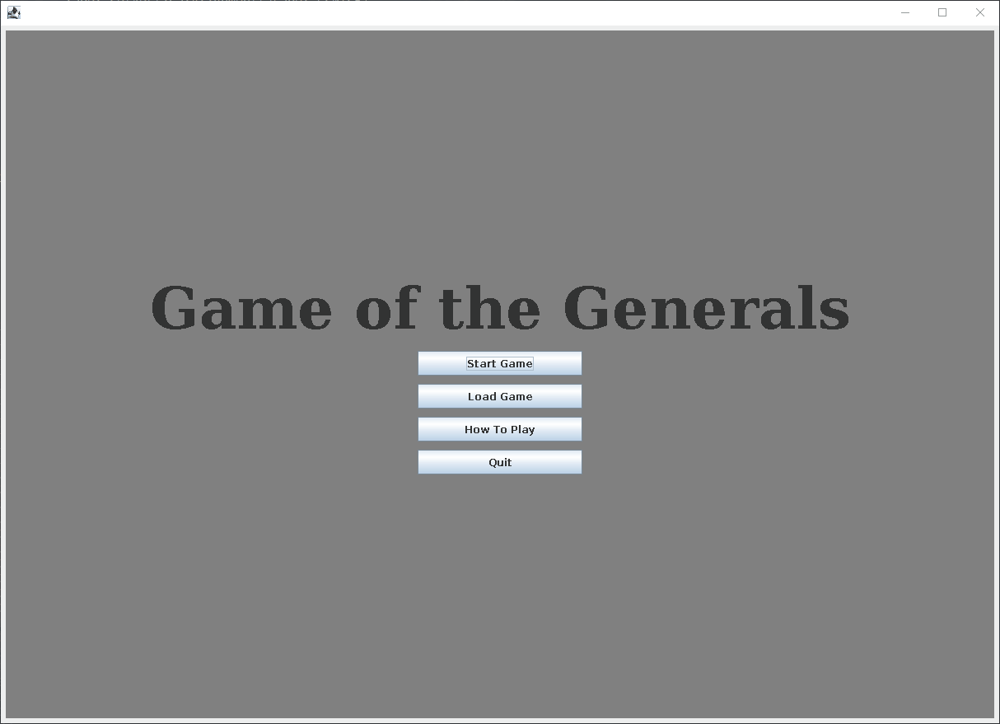
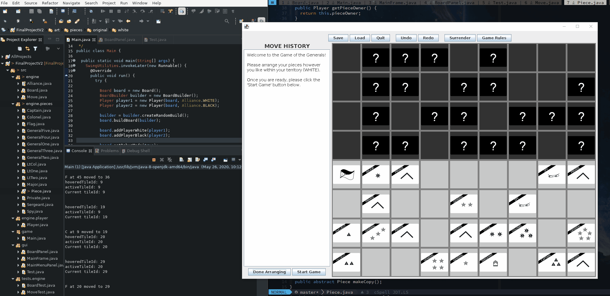
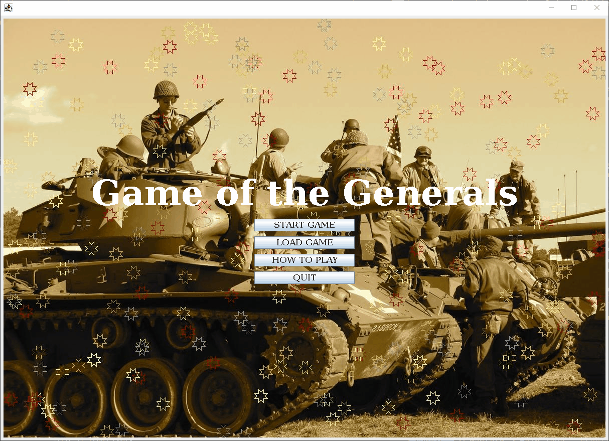

Module 8: Final Project
The Game of the Generals (GoG) Board Game
Requirements
Project Submissions
Week 1: Checkpoint 1 Project Proposal
- Write the project proposal. Done
- Plan the code. Determine Classes, methods, variables needed. Done
- Sketch the GUI layout. Done
- Create the complete GUI of the program:
- Lobby and lobby menus (Deprecated to main menu). Done (Late)
- Design GoG game board. Done
- Design GoG game pieces. Done
- Menu bar Done (Late)
Week 2: Checkpoint 2 Code Submission
 
- Create GoG game logic/checkers:
- Game pieces chain of command hierarchy. Done
- Piece alliance (my side/opponent side) Done
- Legal and unavailable moves. Done
- Piece-on-piece engagement. Done
- Other gameplay checkers. Done
- Create tester classes for all game logic classes. Incomplete
Week 3: Checkpoint 3 Code Submission
 
- Implement event handling. Done
- Finish GUI package:
- Add history panel. Done
- Add main menu. Done
- Finish menu bar. Done
- Highlight candidate moves on mouse hover. Done
- Finish Engine package:
- Finish Move class. Done
- Finish Board class. Done
- Finish Player class. Done
- Finish Piece class. Done
Week 4: Final Project Final Submission
 
- Implement “Quit” and “Surrender” feature. Incomplete
- Implement “Save game/Load game” feature. Done
- Implement “Undo/Redo” feature. Done
- Improve program performance. Done
- Remove unnecessary codes. Done
- Potential refactoring for better performance and readability. Done
- Exceptions handling. Done
- Improve Class security and finish Javadocs. Done
- Fix remaining bugs. Done
- Present final project. Done
- Fill out requirements file with line numbers from the final version of code. Done
Explain
Reflect
Resources
- 📺 Java Chess Engine Tutorial
- 📺 Java Tutorial - Creating a Minesweeper
- 📺 JLayeredPane demo tutorial
- 📄 Stackoverflow - Adding JLayeredPanl to Panel
- 📄 Stackoverflow - Adding integers to int array
- 📄 Stackoverflow - Add padding to JTextArea
- 📄 GeeksforGeeks - Adding an element to int Array
- 📄 GeeksforGeeks - JPopupMenu Docs
- 📄 GeeksforGeeks - JSeparator Docs
- 📄 How to get current timestamp in Java
- 📄 JTextField docs and examples
- 📄 Java Convert String to Int examples
- 📄 Stackoverflow - About ComboBox in JOptionsPane
- 📺 YouTube - How to get the JComboBox value in java Swing getSelectedItem
Main menu background image